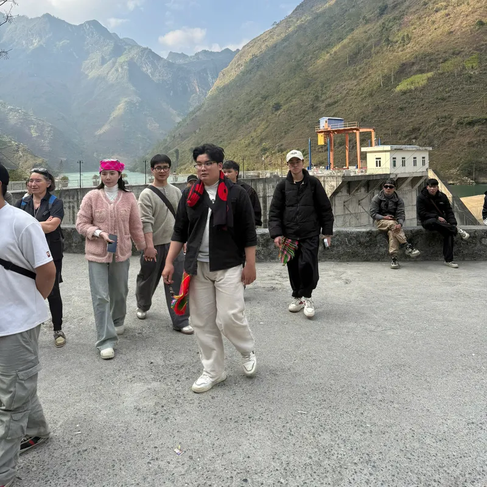

Safety
Is the Ha Giang Loop safe?
Yes, if you ride slower than feels necessary and respect the weather. The accidents on this loop are almost never about the road itself — they are about riders in a hurry, on a bike they do not know, in weather they should have waited out.

What actually causes accidents here
Overtaking on a blind corner to keep to a schedule. Riding a rented bike you have never handled before, on a wet road, in the dark. Almost every accident I have seen or heard about on this loop traces back to one of those three things, and none of them are about the road being inherently dangerous — they are about the rider's decisions on it.
The roads themselves
Narrow, with genuine drops in places and corners you cannot see round. Most of the route is sealed road, but the first day of some itineraries — mine included, on the off-road route — is dirt track, which is a different skill to a paved mountain pass. If you have not ridden loose gravel or mud before, that is worth knowing ahead of time, not on the day.

Weather and landslides
The rain arrives with the summer and stays into the early autumn, and that is when the landslides happen. Roads can disappear, sometimes for days. This is not a rare event I am mentioning to sound careful — it happens most rainy seasons, and it is the single biggest reason I ask every guest for their dates before I confirm anything.
What I do differently on a guided trip
I ride slowly enough that people behind us get impatient, and I do not overtake on blind corners. Helmets I provide are proper full-face ones, not the thin open-face kind. Homestays are places I know personally, and I plan the route around the sky rather than the itinerary — if a day needs to be reversed, delayed, or a camping night moved to a homestay room instead, that is what happens, refund included if it changes the price.

Where this trip is wrong for you
I am not going to tell you this loop has never hurt anyone. It has. If you are the kind of rider who gets frustrated behind a slow group and wants to push on, or you are not willing to lose a day to weather, this is not the trip for you — on your own or with me.
If you are self-driving
You legally need a 1968-convention International Driving Permit covering motorbikes, plus your original national licence. Without both, your travel insurance will not pay out if something happens, and police checks along the loop are common. Wear the full-face helmet even if the rental shop only offers the thin plastic kind — buy or borrow a proper one if you have to. And build in slack: do not plan a day so tight that bad weather forces you to choose between being late and riding too fast to catch up. If you are still deciding between riding yourself and taking a rider, see easy rider vs self-drive for the full comparison.
Travelling on your own rather than in a pair or group changes some of this too — the solo female travel guide covers what I do differently for a solo guest specifically.
Quick questions
A few short answers before you go — the full FAQ page has more, and the Ha Giang Loop guide covers the basics.
- Do I need a motorbike licence? Not as a passenger. To ride your own bike you need the International Driving Permit mentioned above, plus your original licence.
- What if the weather turns during the trip? On my trips, the plan bends around the sky — we may reverse a day, wait out a morning, or drop a road rather than push through.
Next step
If you would rather not carry that risk alone
A guide does not remove the risk on these roads — it moves some of the judgement calls onto someone who already knows the weather, the homestays, and the road. See the four trips, or send me your dates and I will tell you honestly what to expect.